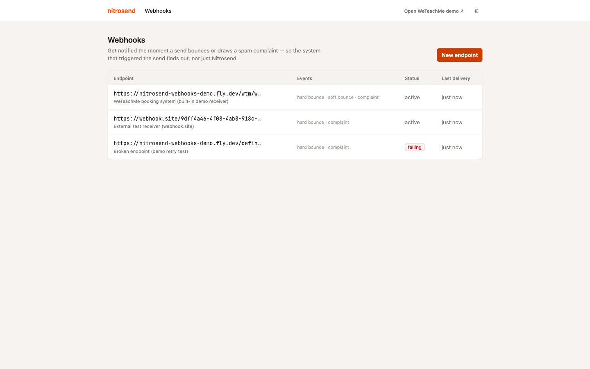
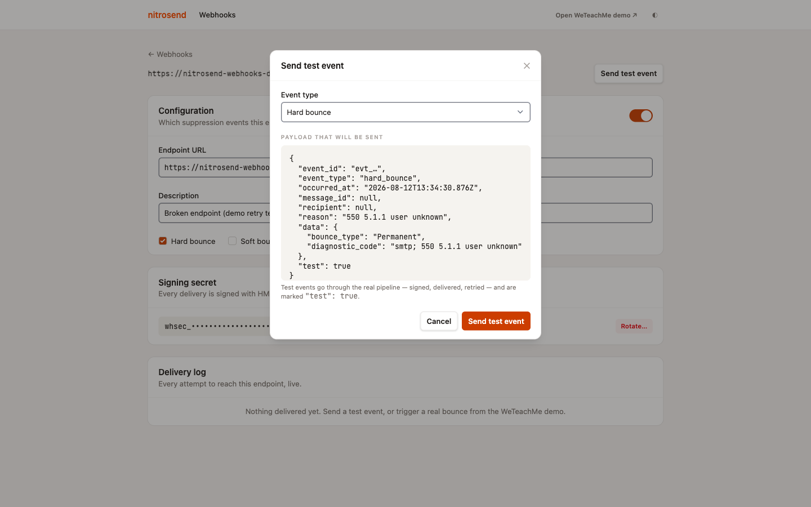
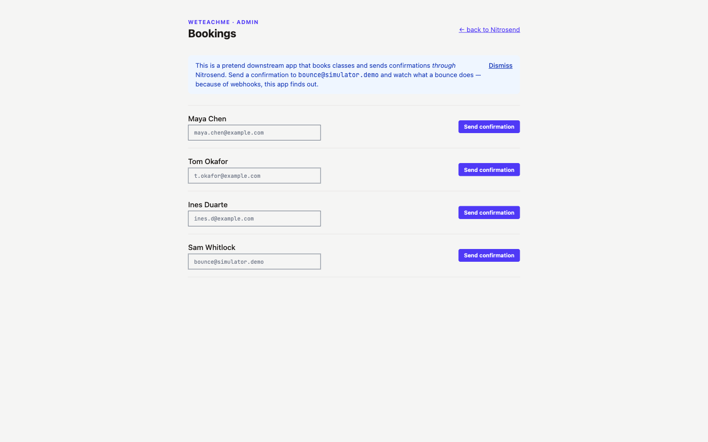
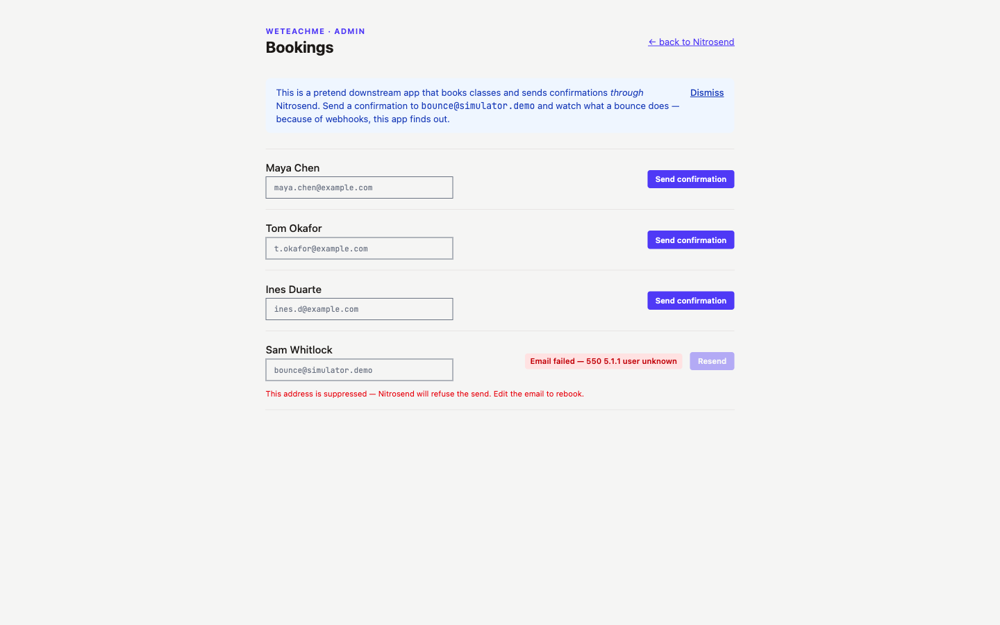
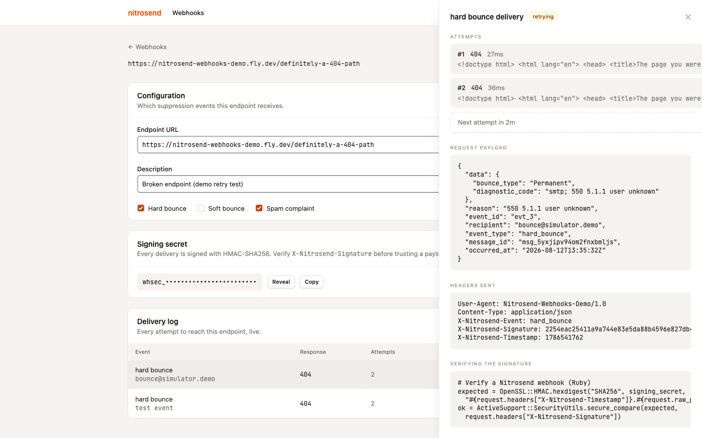
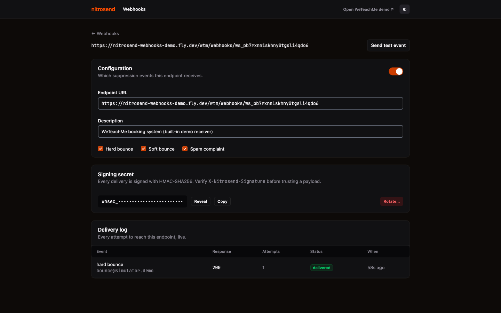

Nitrosend — Product Engineer Application
Nitrosend tells you a message was accepted. It never tells you what happened next. This is a working prototype of the piece that's missing: outbound webhooks for suppression events.
The gap
When a send bounces or draws a spam complaint, Nitrosend does the right thing internally: SES reports the event, the address goes on the suppression list, and the account stops sending to it. That protects Nitrosend's own domain reputation.
But the event stops there. Nothing tells the application that triggered the send.
Take a concrete case: a customer mistypes their email address at checkout, and a booking platform calls the transactional API to send a confirmation to that bad address. Nitrosend accepts the message, queues it, returns a message ID — from the caller's perspective the send succeeded, and that's the last thing its own database knows. Minutes later SES reports a hard bounce and Nitrosend does the right thing on its own side, suppressing the address — but the caller never hears about it. Its own record for that order keeps showing "confirmation sent" indefinitely, until the customer, having never received one, files a support ticket and someone manually cross-references the Nitrosend dashboard by email address to reconstruct what happened.
Push the event out instead, and the same bounce reaches the caller within seconds, carrying the identifiers it needs to tie the failure back to that specific order. It can flag the order "email undeliverable" the moment it happens and route it straight into a support workflow — a phone call to the customer before they've even noticed anything's wrong. And if the ticket comes in first anyway, the order is already flagged with the exact reason and timestamp: a one-line lookup for support instead of a manual bounce-log hunt.
This isn't a hypothetical integration problem — it's the exact scenario the product is built around. Nitrosend's own positioning is "connect once, and your AI assistant can manage your entire email operation" for downstream apps and agents. Suppression state is exactly the kind of operational fact a downstream system needs back, and right now it doesn't get it.
What's advertised vs. what's there
Worth being precise about this before treating it as a finding — checked against both the marketing site and the live API surface, not assumed.
| Claim | Where | Reality |
|---|---|---|
| "Real-time event webhooks for delivery, opens, clicks, bounces, and more" | /features |
No webhook resource in the API |
| "Sent, delivered, opened, clicked, bounced, complained, unsubscribed, failed… signed with HMAC-SHA256, retried with exponential backoff" | /transactional-email-api |
Described in detail, not present |
| Suppression list exists and is enforced | Product behaviour | Confirmed — sends to suppressed addresses are blocked |
| Suppression list is queryable | GET /v1/my/suppressions |
Confirmed — read-only, no way to subscribe to changes |
| Webhook configuration surface (register endpoint, choose events, view delivery attempts) | Dashboard + full API reference | Not present anywhere |
The full API reference lists every other configuration surface — Integrations, Domains, Suppressions — and none of them is a webhook. This reads less like a roadmap item and more like documentation that shipped ahead of the feature.
Scope
Narrowly: outbound suppression events — bounce and complaint notifications pushed to a downstream endpoint — rather than the full sent/delivered/opened/clicked taxonomy the marketing copy implies.
A bounce or complaint is actionable in a way opens and clicks aren't — retry with a different address, flag a contact record, alert a human. It's also a self-contained, demoable slice that maps directly onto data Nitrosend already has, rather than requiring new tracking infrastructure. Per-brand endpoint scoping beyond a single account and UI for replaying historical events are deliberately out of scope for a prototype.
What I built
Rather than mock the feature, I built the real pipeline: a small "WeTeachMe" booking app stands in for any downstream integrator, sending confirmations through a Nitrosend-shaped API. When one bounces, a real signed HTTP request goes out, gets verified, and the booking updates live — no refresh.
A URL, which suppression events it should receive, an enable toggle. The events column stays plain text — it's passive configuration, not something that needs attention, so it doesn't get a badge.

webhook.site URL for inspecting raw payloads, and one pointed at a dead path — its failing badge is the only colour on the page that isn't the primary action, because it's the only row that needs attention.A test event goes through the real pipeline — signed, delivered, retried on failure — and is marked "test": true so it's distinguishable from a real bounce, but otherwise indistinguishable in behaviour.

The demo simulates SES with magic addresses — bounce@simulator.demo hard-bounces, complaint@simulator.demo files a spam complaint — so the whole loop is reproducible without touching a real mailbox.


Every attempt is logged with its real response — status code, latency, body — so a retry in progress is visible as it happens, not summarised after the fact.


Engineering notes
Every delivery carries X-Nitrosend-Event, X-Nitrosend-Timestamp, and X-Nitrosend-Signature. The signature is HMAC-SHA256(secret, "{timestamp}.{body}"), checked with a constant-time comparison and a ±5 minute timestamp window to block replay. Rotating a secret doesn't break in-flight deliveries — the previous secret keeps verifying for 24 hours.
Failed deliveries retry at 30s, 2m, 10m, 30m — five attempts, then a terminal failed state. Not simulated: the delivery log above is reading real DeliveryAttempt rows written by a real job that really waited.
Since anyone can register an endpoint URL, every delivery is pinned to a DNS-resolved IP that's checked against private/reserved ranges before the request goes out — closing the gap between "this URL looked safe" and "this URL is what we actually connected to."
No login. A signed cookie assigns a fresh, isolated workspace on first visit, seeded with demo data, purged after 24 hours of inactivity. Two reviewers can use the staging link at once without seeing each other's clicks.
# verifying a delivery (Ruby, but the math is the point) expected = OpenSSL::HMAC.hexdigest("SHA256", signing_secret, "#{request.headers['X-Nitrosend-Timestamp']}.#{request.raw_post}") ok = ActiveSupport::SecurityUtils.secure_compare(expected, request.headers['X-Nitrosend-Signature'])
Try it
Open the staging link, go to WeTeachMe, send a confirmation to one of the addresses below, then flip back to Nitrosend and watch the delivery log. Every visitor gets a clean, private sandbox — nothing you do affects anyone else looking at the same link.
| Address | What happens |
|---|---|
bounce@simulator.demo | Hard bounce → suppressed → hard_bounce webhook fires |
softbounce@simulator.demo | Soft bounce → not suppressed → soft_bounce webhook fires |
complaint@simulator.demo | Spam complaint → suppressed → complaint webhook fires |
| anything else | Delivers normally, no event |